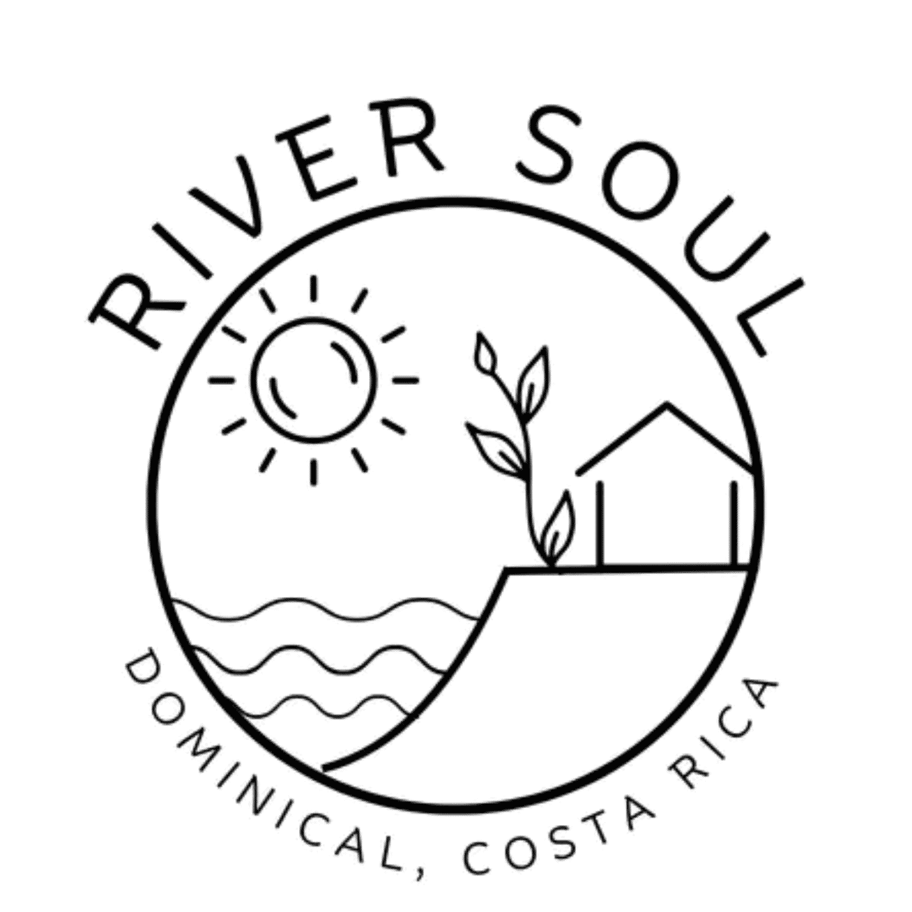

DOMINICAL, COSTA RICA
Barú Flood Index
Loading…
Loading season…
⚠ ALERT
Current flood conditions — Barú River crossing, Dominical, Costa Rica
Fetching live conditions…
Barú watershed rainfall — Platanillo and Tinamastes upstream monitoring
Watershed Rainfall · 3 Points
River Mouth, Platanillo mid-valley, and Tinamastes Valley upper catchment. Heavy upstream rain arrives at the crossing in 2–6 hours.
Live weather stations near Dominical — Quepos, Dominical, Uvita
3 Nearby Stations · Live
Quepos, Dominical, Uvita — all within 40km of the Barú crossing.
Rainfall Comparison · mm
7-day flood risk forecast for the Barú River, Dominical
7-Day Risk Forecast
Rainfall Forecast · mm/day
Model Agreement · GFS vs ECMWF
Two independent weather models. When they disagree, treat the higher number as the safety case.
Live weather radar — Barú watershed and Dominical, Costa Rica
Live Radar
Windy live radar (top) — tap to expand and scrub timeline. Windy rain accumulation (middle) — 24/48h precip totals. IMN national radar (bottom) — Costa Rica official mosaic.
Windy · live radar
⤢ Expand
Windy · rain accumulation (24/48h)
⤢ Expand
IMN · national radar (animated)

⤢ Open full
Radar © IMN & © Windy.com · independent of the flood score
Historical flood score log — Barú River, Dominical
Flood Score · Last 30 Days
Recent Log
Log a river observation
Log Observation
Recent Observations
No observations yet.
Flood event record and field journal — Barú River, River Soul, Dominical
Flood Record · 2025
Confirmed flood events at the Barú crossing, River Soul. Ground truth.
Field Journal · January 2026
Observed conditions at River Soul · Barú River mouth · Dominical.
Tico Weather Glossary
Aguacero — arrives fast, dumps everything, gone in 20 minutes. No warning, no apology.Temporal — multi-day rain. River doesn't sleep.
Veranillo — little dry season hiding inside the wet season.
Las nubes en la montaña — clouds stacking on Tinamastes ridge. Watch the river.
Barú River flood guides and stories
Stories, guides, and field notes from the Barú River crossing.
01
Why I Built the Barú Flood Index
I kept checking apps and none of them told me what I actually needed to know. So I built one that does.
Read →
02
The Barú River Doesn't Care Who You Are
Guests, locals, surfers, families — anyone crossing that road needs the same information.
Read →
03
What It Looks Like When the Barú Floods
October 2024. I went down to the crossing and the river was unrecognizable.
Read →
04
Why Your Weather App Won't Tell You If the Barú Is Flooding
Rain, tides, moon phase, and soil moisture — four things no single app was tracking together.
Read →
Operator Adjustment · 10% of Score
Offshore system, IMN advisory, local knowledge the model can't see — dial it up.
→ adds 0 pts to total score
Alert Ticker
Ticker OFF
Supabase Connection
Tempest Weather Station (River Soul)
WorldTides API (optional)
SQL Setup (run once in Supabase)
CREATE TABLE flood_readings (id BIGSERIAL PRIMARY KEY, created_at TIMESTAMPTZ DEFAULT NOW(), score NUMERIC(4,3), risk_level TEXT, rain_24h NUMERIC(6,1), rain_72h NUMERIC(6,1), soil NUMERIC(5,3), tide_m NUMERIC(4,2), lunar_phase TEXT);
CREATE TABLE observations (id BIGSERIAL PRIMARY KEY, created_at TIMESTAMPTZ DEFAULT NOW(), condition TEXT, rainfall TEXT, water_color TEXT, notes TEXT, observer TEXT, flood_score NUMERIC(4,3));
ALTER TABLE flood_readings ENABLE ROW LEVEL SECURITY;
ALTER TABLE observations ENABLE ROW LEVEL SECURITY;
CREATE POLICY "pub_read" ON flood_readings FOR SELECT USING (true);
CREATE POLICY "pub_write" ON flood_readings FOR INSERT WITH CHECK (true);
CREATE POLICY "pub_read" ON observations FOR SELECT USING (true);
CREATE POLICY "pub_write" ON observations FOR INSERT WITH CHECK (true);
⚠️ This is an informational tool, not an official warning system. Never cross moving water. In a life-threatening emergency, call 911.
🛡️ Official alerts · CNE Costa Rica
📞 Call 911

Free community tool · support its upkeep ♥